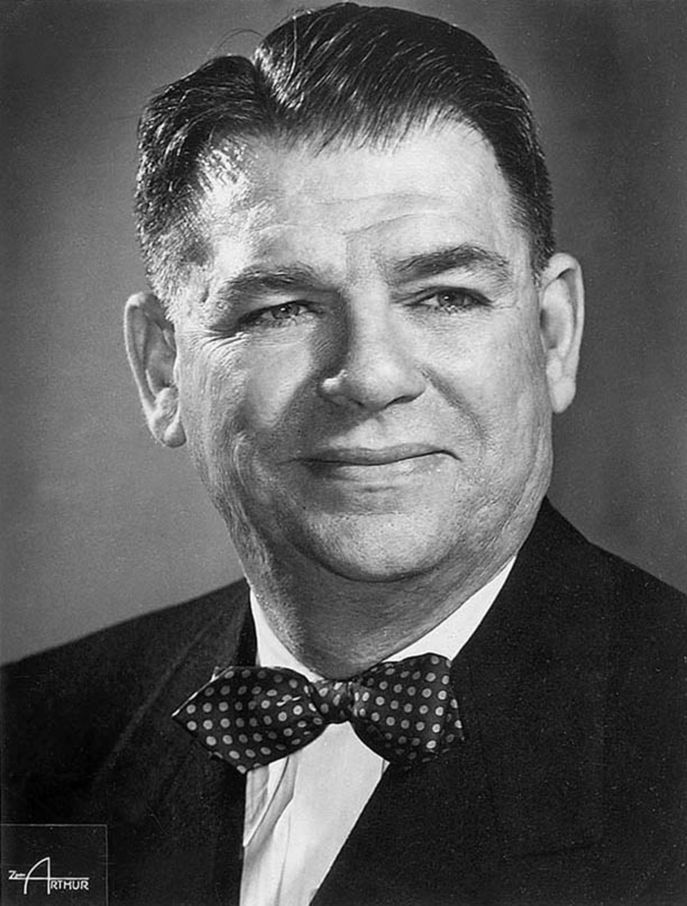

| Oscar Nominations | ||||
|---|---|---|---|---|
| Ceremony | Film | Category | Role | Result |
| 24th Academy Awards Oscars 1952 |
The Strip | Music (Song) | Music and Lyrics "A Kiss To Build A Dream On" | Nominated |
| 19th Academy Awards Oscars 1947 |
Centennial Summer | Music (Song) | Lyrics "All Through The Day" | Nominated |
| 18th Academy Awards Oscars 1946 |
State Fair | Music (Song) | Lyrics "It Might As Well Be Spring" | Won |
| 14th Academy Awards Oscars 1942 |
Lady Be Good | Music (Song) | Lyrics "The Last Time I Saw Paris" | Won |
| 11th Academy Awards Oscars 1939 |
The Lady Objects | Music (Song) | Lyrics "A Mist Over The Moon" | Nominated |

Oscar Hammerstein II